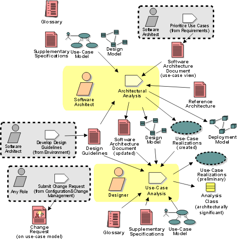

Disciplines >
Disciplines >
 Analysis & Design >
Analysis & Design >
 Workflow >
Define a Candidate Architecture
Workflow >
Define a Candidate Architecture
Disciplines >
Analysis & Design >
Workflow >
Define a Candidate Architecture
Workflow Detail:
|
Topics |
 |
The purpose of this workflow detail is to:
These activities are best carried out by a small team staffed by cross-functional team members. Issues that are typically architecturally significant include performance, scaling, process and thread synchronization, and distribution. The team should also include members with domain experience who can identify key abstractions. The team should also have experience with model organization and layering. The team will need to be able to pull all these disparate threads into a cohesive, coherent (albeit preliminary) architecture.
The work is best done in several sessions, perhaps performed over a few days (or weeks and months for very large systems), with iteration between Architectural Analysis and Use-Case Analysis. Perform an initial pass at the architecture in Architectural Analysis, then choose architecturally significant use cases, performing Use-Case Analysis on each one. After (or as) each use case is analyzed, update the architecture as needed to reflect adaptations required to accommodate new behavior of the system and to address potential architectural problems which are identified.
Where the architecture already exists (either from a prior project or
iteration), change requests may need to be created to change the architecture to
account for the new behavior the system must support. These changes may be to
any artifact in the process, depending on the scope of the change.
|
Rational Unified
Process
|